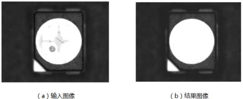
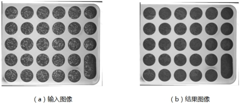
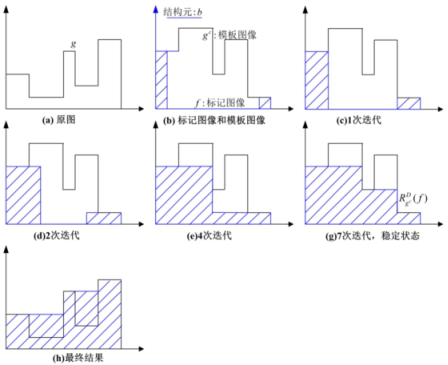
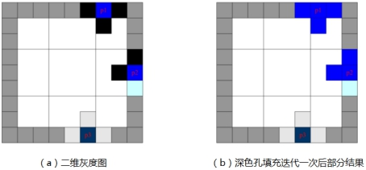

孔洞填充是图像预处理方法之一，主要任务是对因打光问题或噪声污染得到的图像进行填充，得到消除打光影响或噪声后的填充孔洞后的图像。根据待填充孔洞与其边界像素的关系，孔洞填充分为深色孔填充和浅色孔填充。


| 分类 | 参数名称 | 参数描述 |
|---|---|---|
| 属性窗口 | 孔洞填充ROI | 全图还是矩形，全图就是将全图的孔洞都进行填充，矩形的话就是只对矩形框里面的孔洞进行填充。 |
| 矩形ROI | 当孔洞填充为矩形的时候，需要设置矩形ROI。即X、Y、W和H。 | |
| 填充类型 | 深色孔填充和浅色孔填充。 |
|
| 图像窗口 | 输入图像 | 待进行孔洞填充的图片。 |
| 矩形GUI | 用于孔洞填充ROI为矩形时，设置矩形区域。 | |
| 数据链 | 输入图像 | 待进行孔洞填充的图片。 |
| 高级界面 | 无 | 无 |
| 分类 | 参数名称 | 参数描述 |
|---|---|---|
| 监视窗口 | 输出图像 | 进行孔洞填充的结果图像。 |
| 执行结果 | 工具执行结果。 | |
| 执行时间 | 工具执行时间。 | |
| 图像窗口 | 输出图像 | 进行孔洞填充的结果图像。 |
| 执行结果 | 显示工具执行结果，执行成功显示“OK”，执行失败显示“NG”，同监视窗口的执行结果参数。 | |
| 数据链 | 输出图像 | 进行孔洞填充的结果图像。 |
将浅色像素所包围的深色像素转换为浅色像素，在输出图像中会填充深色孔。
将深色像素所包围的浅色像素转换为深色像素，在输出图像中会填充浅色孔。
深色孔和浅色孔填充工具原理是膨胀和腐蚀的灰度形态学重建。浅色孔填充和深色孔填充的原理相似，这里只以深色孔填充工具为例，说明孔洞填充的基本原理。

图3为一维灰度图像深色孔填充的原理图。以输入图像的非作为模板图像。标记图像的边界与模板图像边界相同，其余部分为0。利用标记图像对模板图像反复进行测地膨胀操作，直到稳定状态。将稳定状态结果求非即为对原图像进行深色孔洞填充的结果，即图3中（a）-（h）的过程。

图4为二维灰度图像深色孔填充示意图。根据图3的过程很容易将一维算法推广到二维灰度图像的情况，图4中只对边界迭代一次后部分位置做了说明，具体可参照一维灰度图像填充进行推广。
无
参见“\Samples\孔洞填充工具.gvp”。